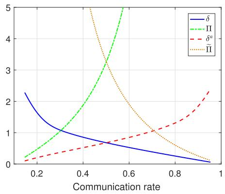

本节需要掌握 马尔可夫链 的基本概念（状态、转移矩阵、稳定分布）。如果你不熟悉，别担心——我们有一个 5 分钟速成段 帮你快速上手。另外需要理解上一课讲的触发条件反转（反转 $f_d$ 和 $f_s$）。
1. 问题：反转后通信率会变
在上一课中，攻击者反转了触发条件——让该通信的时候不通信，不该通信的时候反而通信。但这里有一个 致命问题：
想象一下：你是一个攻击者，入侵了传感器网络的调度器。你反转了触发条件，让系统在正常情况下不该通信的时刻却发了数据包。监控人员一看流量统计——"咦？今天的通信率怎么从 30% 变成了 80%？"——立马就知道出问题了。
所以，攻击者需要 调整参数（$\delta^a$ 或 $\tilde{\Pi}$），使得反转后的平均通信率与反转前 完全一致。这样一来，从网络监控的角度看，一切正常。
2. 平均通信率的定义
记 $\gamma_k$ 为时刻 $k$ 的通信指示变量（$\gamma_k = 1$ 表示通信，$\gamma_k = 0$ 表示不通信）。平均通信率定义为：
这个极限存在的条件是什么？如果 $\gamma_k$ 的序列具有 遍历性（ergodicity），那么时间平均等于系综平均（即平稳分布下的期望）。这正是我们接下来要讨论的。
3. ⏱ 马尔可夫链速成（5 分钟）
为什么在这里讲马尔可夫链？ 因为调度器的工作状态 $\tau_k$ 就是一个马尔可夫链——当前时刻的状态只依赖于前一时刻，不依赖于更早的历史。分析这个链的统计特性，我们就能知道通信率是多少。
3.1 什么是马尔可夫链？
想象你每天吃什么早餐：
- 今天吃面包 → 明天有 70% 概率继续吃面包，30% 概率改吃粥
- 今天吃粥 → 明天有 60% 概率继续吃粥，40% 概率改吃面包
这就是一个马尔可夫链——明天的早餐只取决于今天的早餐，和昨天、前天吃什么无关。
3.2 状态空间与转移矩阵
在我们的场景中，$\tau_k$ 的状态空间是 $\{0, 1, \dots, \bar{h}\}$，其中每个状态代表"距上次通信过去了 $\tau_k$ 步"。转移矩阵 $T$ 的维度是 $(\bar{h}+1) \times (\bar{h}+1)$，其中：
具体来说，如果当前 $\tau_k = i$：
- 通信发生（$\gamma_k = 1$，概率 $p_i$）：$\tau_{k+1}$ 回到 0
- 通信未发生（$\gamma_k = 0$，概率 $1 - p_i$）：$\tau_{k+1}$ 增加到 $i+1$（如果 $i+1 \leq \bar{h}$）或保持在 $\bar{h}$
3.3 稳定分布
经过足够多步（$k \to \infty$），链的分布会 收敛 到一个不随时间变化的分布 $\eta$，称为稳定分布（stationary distribution）：
只要链是 遍历的（不可约 + 非周期），这个稳定分布存在且唯一，并且时间平均等于系综平均。所以：
4. Algorithm 1：二分搜索找 $\delta^a$
现在问题明确了：攻击者要找一个 $\delta^a$（或 $\tilde{\Pi}$），使得反转后的平均通信率 $\lambda_d^a$ 等于反转前的 $\lambda_d$。
论文提出的 Algorithm 1 使用二分搜索来解决这个问题：
- 初始化：设定 $\delta^a$ 的上下界 $[\delta_{\min}^a, \delta_{\max}^a]$
- 取中点：$\delta^a = (\delta_{\min}^a + \delta_{\max}^a) / 2$
- 计算 $p_d^a$：根据反转后的触发条件和当前 $\delta^a$，计算每个状态的通信概率 $p_i^a$
- 计算 $\lambda_d^a$：用马尔可夫链稳定分布计算平均通信率 $\lambda_d^a = \sum \eta_i \cdot p_i^a$
- 比较：
- 如果 $\lambda_d^a > \lambda_d$：$\delta^a$ 太小，增大下界 $\delta_{\min}^a = \delta^a$
- 如果 $\lambda_d^a < \lambda_d$：$\delta^a$ 太大，减小上界 $\delta_{\max}^a = \delta^a$
- 循环：重复 2-5，直到 $|\lambda_d^a - \lambda_d| < \varepsilon$（收敛容差）
4.1 为什么二分搜索能用？
二分搜索能工作的前提是：$\lambda_d^a$ 关于 $\delta^a$ 单调。直觉上看：
- 反转后，误差 $e_k$ 变大时才不通信（正常是变大时通信）
- $\delta^a$ 越大，"不通信"的门槛越高 → 通信越频繁 → $\lambda_d^a$ 越大
- $\delta^a$ 越小 → 通信越少 → $\lambda_d^a$ 越小
所以 $\lambda_d^a$ 是 $\delta^a$ 的 单调递增函数，二分搜索一定能找到解（如果解在范围内）。

5. 隐密条件
对于随机性协议，类似地需要 $\lambda_s^a = \lambda_s$，但调整的是概率矩阵 $\tilde{\Pi}$ 而不是阈值 $\delta$。
满足隐密条件后，从网络监控的视角看：
- 平均通信率没变 ✓
- 通信模式看起来正常 ✓
- 但实际上传输的内容是被攻击者操控的 ✗（所以叫"隐密攻击"）
📝 练习
📌 练习 1：手算验证通信概率和平均通信率
题目：给定 $\delta = 1.377$，正常确定性协议的触发条件为 $|e_k| > \delta$，假设误差 $e_k \sim \mathcal{N}(0, 0.5^2)$，计算：
- 某一时刻的通信概率 $p_d = P(|e_k| > \delta)$
- 平均通信率 $\lambda_d$（假设系统已进入稳态）
提示：$|e_k| > \delta$ 的概率为 $2 \cdot \Phi(-\delta / \sigma)$，其中 $\Phi$ 是标准正态 CDF。
解答：
标准差 $\sigma = 0.5$，所以：
查正态分布表（或计算）：$\Phi(-2.754) \approx 0.00294$
如果系统已经进入稳态，$\lambda_d = p_d$（前提是每次触发独立）。所以平均通信率约为 0.59%——这意味着每 1000 个时刻中大约只通信 6 次，非常稀疏。
注意：在实际系统中，$\tau_k$ 马尔可夫链的引入使得连续时刻之间的通信不独立，平均通信率需要按式 (4) 使用稳定分布加权计算，结果与 $p_d$ 略有不同但量级一致。
📌 练习 2：理解二分搜索的正确性
题目：用你自己的话解释为什么二分搜索能保证找到正确的 $\delta^a$。什么条件下二分搜索会失败？
参考答案：
为什么能成功：因为 $\lambda_d^a(\delta^a)$ 是 $\delta^a$ 的单调递增函数（$\delta^a$ 越大，通信越频繁），且连续。二分搜索在单调函数上一定能收敛到目标值，就像在有序数组中找一个数一样。
可能失败的情况：
- 初始范围不包含解：如果目标 $\lambda_d$ 不在 $[\lambda_d^a(\delta_{\min}^a), \lambda_d^a(\delta_{\max}^a)]$ 范围内，二分搜索会收敛到边界值而无法达到目标
- 函数不单调：如果 $\lambda_d^a(\delta^a)$ 不是单调的（理论分析保证了单调性，但如果数值实现有缺陷则可能出现问题）
- 精度要求过高：如果 $\varepsilon$ 设得太小，而数值计算精度不够，可能无法收敛
📌 练习 3：随机性协议的隐密调整
题目：对于随机性协议，攻击者需要调整概率矩阵 $\tilde{\Pi}$ 而不是阈值 $\delta$。随机性协议的"二分搜索"应该搜索什么？维度有什么不同？
参考答案：
随机性协议的触发概率矩阵 $\Pi$ 有 $(\bar{h}+1)$ 个自由参数（每个状态对应一个通信概率）。攻击者需要找一个新的矩阵 $\tilde{\Pi}$，使得反转后的平均通信率不变。
这不再是 一维 二分搜索，而是 $(\bar{h}+1)$ 维 的优化问题。论文中没有给出具体的搜索算法，但可能的方法包括：
- 固定比率缩放：让 $\tilde{\Pi} = \alpha \cdot \Pi$，然后一维搜索 $\alpha$
- 保持分布形状不变，只整体平移
- 使用更一般的非线性优化方法